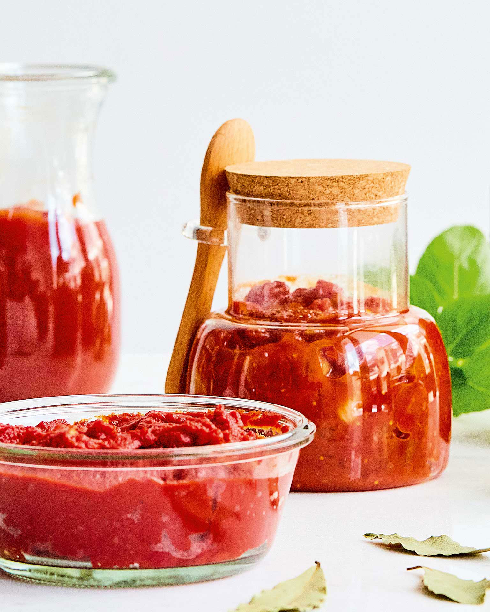

Μαρμελάδα κεράσι με κανέλα και μοσχοκάρυδο
- Πλένουμε 1 κιλό κεράσια και αφαιρούμε τα κουκούτσια.
- Κόβουμε τα κεράσια και τα βάζουμε σε κατσαρόλα με 1 φλιτζάνι νερό.
- Προσθέτουμε 1 κιλό ζάχαρη, 1-2 ξύλα κανέλας και 1/2 κεφαλάκι μοσχοκάρυδο (προαιρετικά).
- Σκεπάζουμε την κατσαρόλα και αφήνουμε για 8 ώρες ή όλη τη νύχτα.
- Βράζουμε το μείγμα για 20 λεπτά σε χαμηλή φωτιά και στη συνέχεια δυναμώνουμε τη φωτιά, ανακατεύοντας μέχρι να δέσει.
- Προσθέτουμε χυμό από 1 λεμόνι και αφήνουμε να βράσει για 2-3 λεπτά ακόμα.
- Γεμίζουμε αποστειρωμένα βάζα και τα κλείνουμε. Τα τοποθετούμε ανάποδα μέχρι να κρυώσουν
Σορμπέ κεράσι με αμαρέτο
- Βράζουμε 200 γρ. νερό με 120 γρ. ζάχαρη μέχρι να λιώσει η ζάχαρη. Αφήνουμε να κρυώσει.
- Ρίχνουμε το σιρόπι στο μπλέντερ, προσθέτουμε 1 κιλό κεράσια, 2 κουτ. σούπας χυμό λεμονιού και 1 σφηνάκι αμαρέτο και χτυπάμε.
- Βάζουμε το μείγμα σε μεταλλικό μπολ, καλύπτουμε και το τοποθετούμε στην κατάψυξη.
- Ανακατεύουμε μετά από 30 λεπτά, ξανασκεπάζουμε και επαναλαμβάνουμε μετά από 30 λεπτά.
- Αφήνουμε στην κατάψυξη για 2 ώρες και σερβίρουμε μετά από 5-10 λεπτά εκτός κατάψυξης για να μαλακώσει.
Κουνουπίδι γιαχνί με σταφίδες
- Μουλιάζουμε 50 γρ. σταφίδες με 40 ml νερό και αφήνουμε στην άκρη.
- Ζεματίζουμε το κουνουπίδι σε αλατισμένο νερό για 3-4 λεπτά και το στραγγίζουμε καλά.
- Σοτάρουμε σε 60 ml ελαιόλαδο το κρεμμύδι, το κουνουπίδι, και τα κουκουνάρια για 3-4 λεπτά.
- Προσθέτουμε τα ντοματάκια, τον πελτέ ντομάτας, τις σταφίδες (μαζί με το νερό), αλατοπίπερο και σοτάρουμε για 1-2 λεπτά.
- Προσθέτουμε 200 ml νερό, σκεπάζουμε και σιγομαγειρεύουμε για 10 λεπτά.
- Σκορπίζουμε τον μαϊντανό και αφήνουμε το φαγητό να «σταθεί» για 10 λεπτά πριν σερβίρουμε.
Τσάτνεϊ ντομάτας με τσίλι και ξερά σύκα

- Σε μια κατσαρόλα, βάζουμε 1 κιλό τριμμένες ντομάτες, 1 ψιλοκομμένο κρεμμύδι, 6 λιωμένες σκελίδες σκόρδο, 1 κουτ. σούπας τριμμένο φρέσκο τζίντζερ, 1 μικρή πιπεριά τσίλι (ή 1-2 κουτ. γλυκού τσίλι σε σκόνη), 100 γρ. καστανή ζάχαρη, 100 γρ. αποξηραμένα σύκα πολτοποιημένα, 100 ml ξίδι από κόκκινο κρασί, 30 ml ελαιόλαδο, αλάτι και πιπέρι.
- Μαγειρεύουμε σε μέτρια φωτιά για περίπου 1 ώρα, ανακατεύοντας τακτικά, μέχρι να σχηματιστεί μια πηχτή μαρμελάδα.
- Αδειάζουμε σε βάζο, κλείνουμε καλά και αφήνουμε να κρυώσει.
- Διατηρούμε στο ψυγείο για τουλάχιστον 3 μήνες.
Πατάτες πενταράτες
- Τηγανίζουμε 1 κιλό μικρές πατάτες σε ζεστό ελαιόλαδο για 10-12 λεπτά, μέχρι να μισομαλακώσουν.
- Προσθέτουμε κρεμμύδι, πιπεριές, κολοκύθια, μπαχαρικά (κόλιανδρο, μαραθόσπορο, κουρκουμά) και αλατοπίπερο.
- Συνεχίζουμε το τηγάνισμα για 10 λεπτά, μέχρι να μαλακώσουν τα υλικά.
- Σερβίρουμε με γιαούρτι ή λευκό τυρί και ντοματοσαλάτα.
 Spoon Theory
Spoon Theory